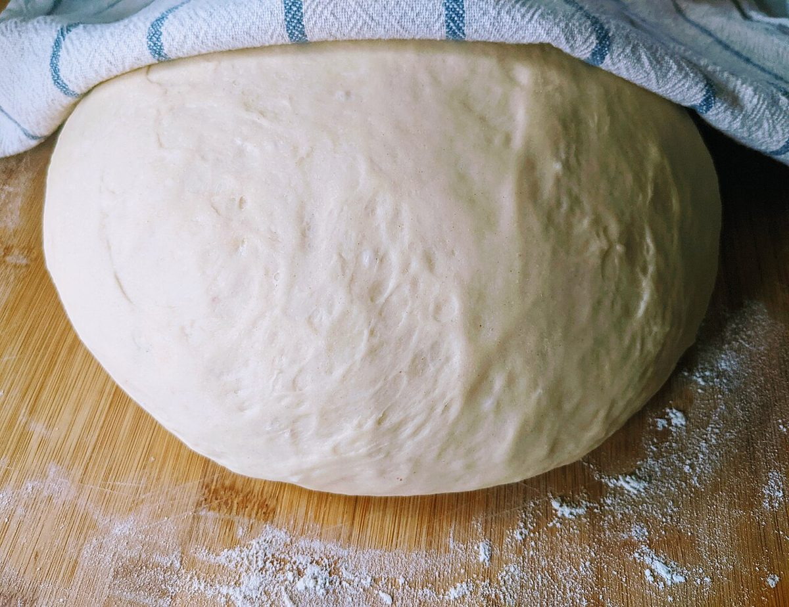

店のこと
お店について確認できているのは、所在地・電話番号・Instagramのアカウントです。
このページの「想像してみる」部分は、制作側が想像して書いたものです。お店の実際の様子・考え・商品とは関係がありません。
確認できていること
- 店名は「パン屋 やぶ蔵」、業種はパン屋
- 所在地は岐阜県瑞浪市一色町4丁目11(〒509-6124)
- 電話番号は070-2308-4661
- 営業時間・定休日・メニュー・価格・ご予約・駐車場は準備中


想像してみる
「蔵」の字から
由来は分かりません。制作側は、物をしまっておく蔵のように、毎日の食卓に欠かせないものを大切に扱うお店かもしれない、と想像しました。パンのことは、Instagramで確かめられるのではないかと考えています(実際のお店の姿ではありません)。
なまこ壁の見方
黒い瓦の面と、白い目地の線。このサイトの各ページは、その格子のように、1枚ずつの「タイル」を並べて作っています。制作側の連想です。
